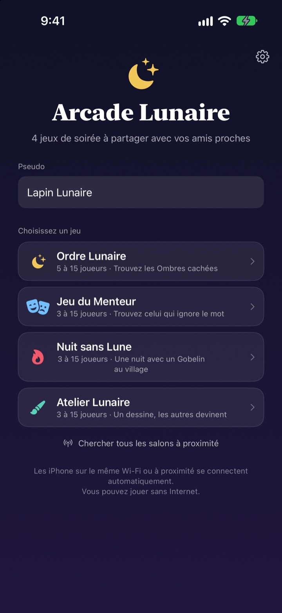
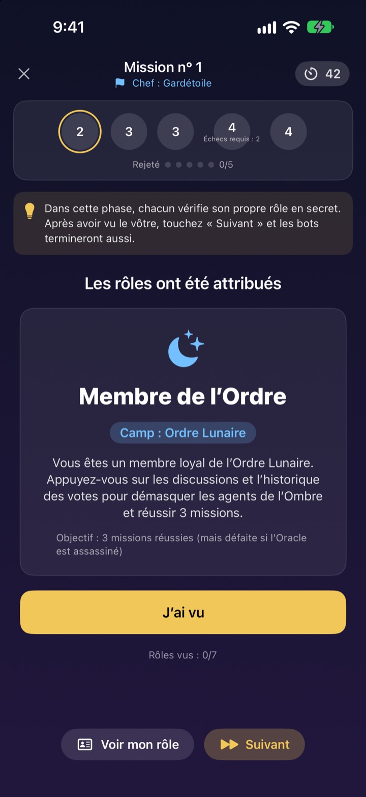
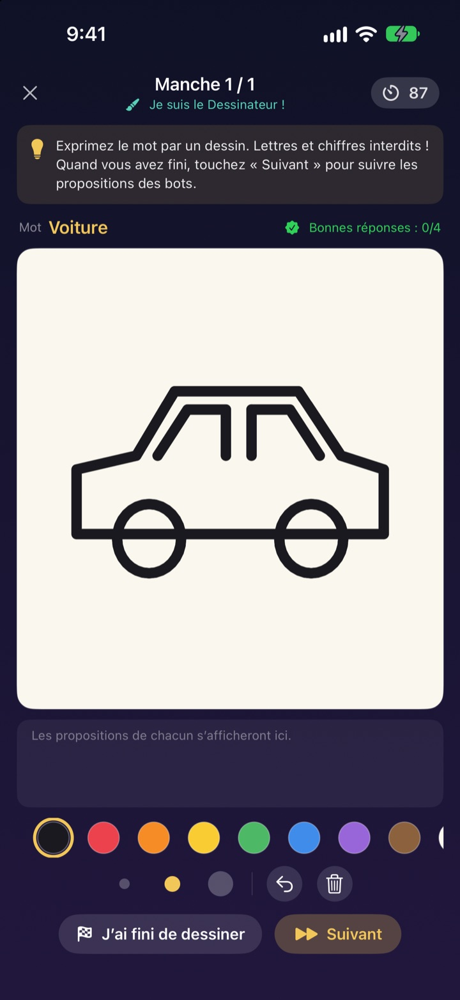
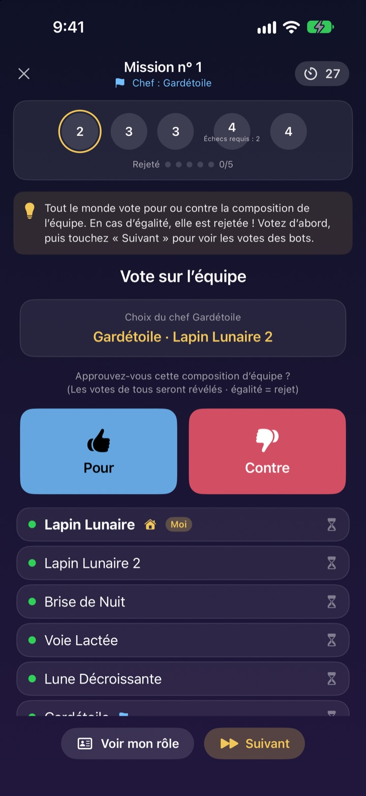

Tout le monde est là ?
Sortez vos iPhone.
Une personne crée un salon, et tous ceux à proximité le rejoignent en quelques secondes. Rôles et mots secrets n’apparaissent que sur l’écran de chacun : pas de cartes, et personne n’est coincé à animer.
Tous les jeux sont gratuits. Ni compte, ni Internet.

Une partie de Jeu du Menteur
Imaginez cinq iPhone posés sur la table et touchez-les un par un pour regarder. Un seul joueur ne connaît pas le mot. Vous pouvez aussi faire passer l’écran entre amis.
Tout le monde est là, mais on ne sait pas à quoi jouer
Soirée jeux, week-end entre amis, réveillon en famille. Pour un loup-garou, quelqu’un doit sortir du jeu pour animer, et les papiers pliés ne restent jamais secrets. Dans un gîte au Wi-Fi capricieux, les jeux en ligne sont exclus. Arcade Lunaire confie l’animation, la distribution des rôles et la connexion aux iPhone.
Votre rôle reste sur votre écran
Au lancement, chaque iPhone reçoit son rôle ou son mot. Pas de cartes à distribuer, pas de « tout le monde ferme les yeux ».
Pendant le vote, on voit seulement qui a voté. Qui a voté pour qui reste secret jusqu’à la révélation.

Quatre jeux pour toutes les tablées
Le Jeu du Menteur se joue à la tchatche, l’Ordre Lunaire traque les Ombres à coups de missions et de votes, la Nuit sans Lune cherche le Gobelin en une nuit, et dans l’Atelier Lunaire l’un dessine pendant que les autres devinent.
L’Ordre Lunaire se joue dès 5, les autres dès 3, et tous jusqu’à 15.

Un nouveau jeu ? Appris en quelques minutes
Chaque jeu a un mode Comment jouer où vous faites une partie avec des bots, étape par étape. Lisez l’astuce en haut et touchez Suivant.
Si l’app se ferme ou si la connexion saute, touchez Reprendre sur l’écran d’accueil pour retrouver la même partie.

Trois étapes pour commencer
- 1
Pseudo et jeu
Chacun ouvre l’app, saisit un pseudo et choisit le jeu.
- 2
Créer ou rejoindre un salon
Une personne crée un salon, les autres le trouvent avec Chercher des salons à proximité.
- 3
L’hôte lance
Quand tout le monde est là, l’hôte touche Lancer la partie. L’app s’occupe du reste.
Les quatre jeux
- Jeu du Menteur · 3 à 15 joueurs
- Tout le monde reçoit le même mot, sauf un. Chacun le décrit à son tour, puis on vote pour désigner le Menteur. Démasqué, le Menteur gagne quand même s’il devine le mot.
- Ordre Lunaire · 5 à 15 joueurs
- Démasquez les Ombres cachées dans l’Ordre. Le chef compose une équipe, tout le monde vote pour ou contre, puis l’équipe joue en secret réussite ou échec. Le premier camp à remporter trois missions gagne.
- Nuit sans Lune · 3 à 15 joueurs
- Une seule nuit, et un Gobelin se cache au village. La nuit, le Chaman, le Voleur de nuit et le Farceur agissent en secret. À l’aube, on débat et on n’a qu’un seul vote pour trouver le Gobelin.
- Atelier Lunaire · 3 à 15 joueurs
- Un joueur dessine le mot, les autres devinent dans le chat. Plus on devine vite, plus on marque, et le dessinateur marque pour chaque bonne réponse.
Chaque jeu peut d’abord s’essayer seul avec des bots en mode Comment jouer.
Questions fréquentes
Je ne vois pas le salon.
Vérifiez que l’hôte et les joueurs sont sur le même Wi-Fi ou proches les uns des autres. Arcade Lunaire doit être activée dans Réglages ▸ Confidentialité et sécurité ▸ Réseau local pour trouver les appareils à proximité. Avec le Wi-Fi et le Bluetooth activés, la connexion est la plus stable.
Dois-je autoriser l’accès au réseau local ?
Oui, c’est ainsi que l’app trouve les iPhone à proximité et s’y connecte. Si vous avez refusé, réactivez-le dans Réglages ▸ Confidentialité et sécurité ▸ Réseau local.
J’ai été déconnecté en pleine partie.
Rouvrez l’app et touchez Reprendre sur l’écran d’accueil pour retrouver le même salon et la même partie. Votre rôle et votre score sont conservés. Si la reconnexion tarde, rejoignez à nouveau depuis la liste des salons.
Quelqu’un ne répond plus et la partie est bloquée.
L’hôte peut retirer un joueur inactif à tout moment : la partie recompte avec les joueurs restants et continue. Le mode hôte MJ permet aussi de passer une étape bloquée.
Combien de joueurs faut-il ?
L’Ordre Lunaire demande 5 joueurs. Le Jeu du Menteur, la Nuit sans Lune et l’Atelier Lunaire se lancent dès 3. Tous vont jusqu’à 15. Pas assez de monde ? Apprenez les règles avec des bots en mode Comment jouer.
Faut-il Internet ou un compte ?
Non. Ni inscription, ni connexion, ni Internet. Les iPhone à proximité se relient directement, et les données de jeu ne sont jamais envoyées à un serveur.
Puis-je essayer un jeu seul d’abord ?
Oui. Choisissez un jeu puis Comment jouer (entraînement avec bots). Des bots rejoignent le salon et vous jouez une partie complète, étape par étape.
Comment signaler un bug ou proposer une idée ?
Directement depuis Réglages (la roue dentée) ▸ Assistance dans l’app, ou par e-mail à l’adresse ci-dessous. Nous répondons au plus vite.
Bug, idée ou autre question : écrivez à mizzking75@gmail.com.